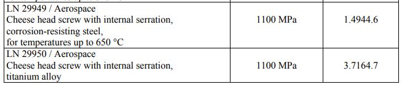
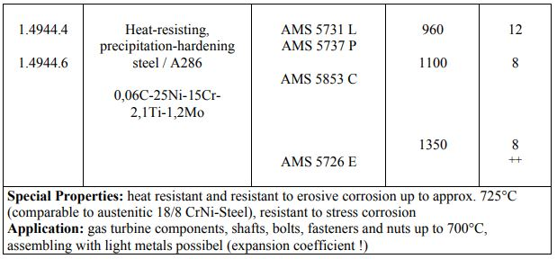
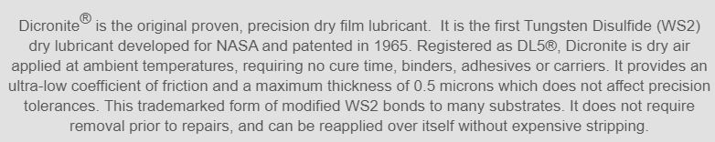

Ref : https://www.johann-maier.de/assets/files/european-standard-parts_issue-12_2015-(1).pdf



Dicronite® is the original proven, precision dry film lubricant. It is the first Tungsten Disulfide (WS2) dry lubricant developed for NASA and patented in 1965. Registered as DL5®, Dicronite is dry air applied at ambient temperatures, requiring no cure time, binders, adhesives or carriers. It provides an ultra-low coefficient of friction and a maximum thickness of 0.5 microns which does not affect precision tolerances. This trademarked form of modified WS2 bonds to many substrates. It does not require removal prior to repairs, and can be reapplied over itself without expensive stripping.